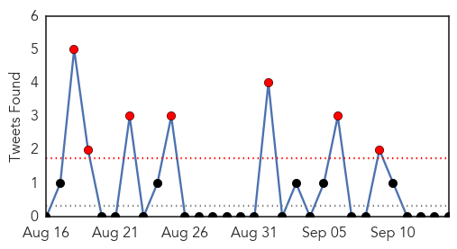

West Nile Virus
30-Day Web Trend
1 alerts, 0 warnings

30-Day Twitter Trend
1 alerts, 0 warnings

Article Locations

Article Confidences

Top Articles:
Top Tweets:
-
No tweets found for Sep 14, 2015
Unknown
30-Day Web Trend
0 alerts, 0 warnings

30-Day Twitter Trend
8 alerts, 8 warnings

Article Locations

Article Confidences

Top Articles:
- 0.955
- UTHealth's Paula Stigler-Granados awarded grant to conduct outreach, education on Chagas disease in South Texas
- 0.946
- Minnesota Salmonella Outbreak Linked to Chipotle Franchises
- 0.943
- UTHealth researcher awarded CDC grant to study Chagas disease in Texas
- 0.939
- Alaska officials warn of spike in 'beaver fever' infections
- 0.929
- Legionnaire's disease on an outbreak
- 0.922
- Latest Newry News, Newry Sport and Newry Business for Newry City
- 0.903
- Flu vaccinations are now available
- 0.888
- Shortage of doctors hits services
- 0.869
- Salmonella outbreak leads to second death
- 0.825
- AES cases raise health alert
- 0.788
- State issues warning about cucumbers from Mexico
- 0.710
- Snake Bite Cases Expected to Rise During El Nino, According to Study
- 0.706
- Latest News from India,Politics,Bollywood,Business,Sport
- 0.648
- Was case of 'bird lung' an allergy or infection?
- 0.643
- Chronic Wasting Disease Archives
- 0.632
- One Symptom in New Medical Codes: Doctor Anxiety
- 0.623
- KUNA : Health Min. to investigate fatalities, heath problems caused by medical errors
- 0.623
- WAFF-TV: News, Weather and Sports for Huntsville, AL
- 0.613
- Was case of ‘bird lung’ an allergy or infection?
- 0.586
- France to vaccinate livestock following bluetongue outbreak
- 0.582
- News, Sports, Jobs, Community Information - Parkersburg News and Sentinel
- 0.558
- Janssen's STELARA® (Ustekinumab) Available in the UK for the Treatment of Adolescents With Moderate-to-Severe Psoriasis
- 0.554
- Wildfire and Private Water Wells
- 0.531
- Madagascar plans to immunize 11.3 mln children against poliomyelitis - Xinhua
- 0.521
- Latest Political News, Business, Sports News, Entertainment News World News, Features, Video and Infographics
- 0.507
- World: WHO supports European countries in managing health needs of refugee and migrant influxes
Top Tweets:
- 0.657
- RT: Tormenta de otoño en el valle Rapa, en el Parque nacional de Sarek (Suecia). Foto de Orsolya Haarberg http://t.co/aoGZL…